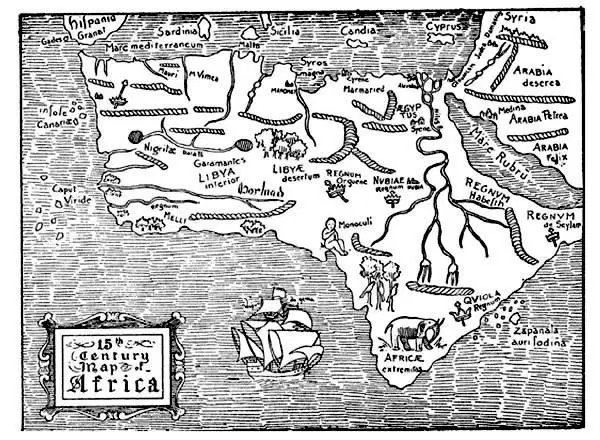
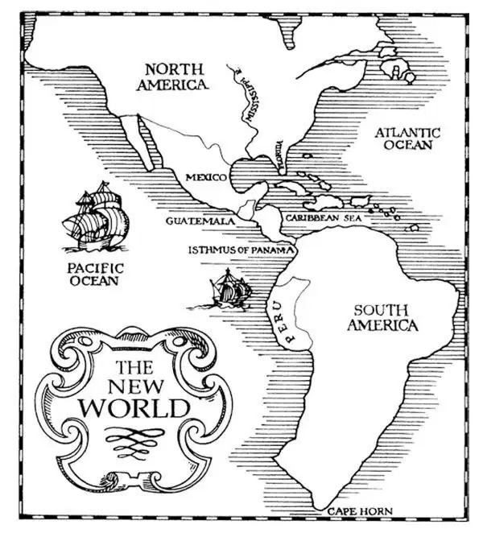
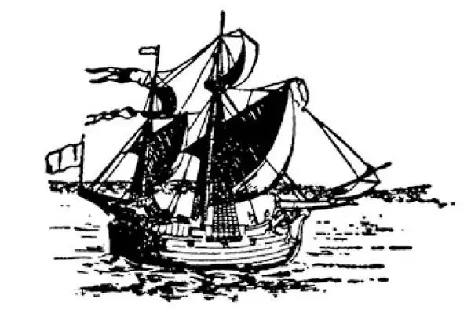
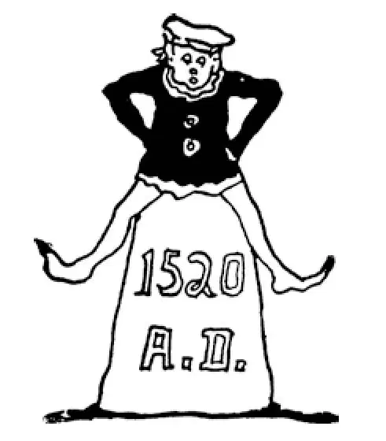

63
Fortune Hunters
寻找财富的探险家

THE New World had no name. It was simply called the New World , as one might speak of the new baby .
It had to have a name, but what should it be? Of course if we could have chosen the name, we should have called it Columbia after Columbus . But another name was selected, and this is how it happened.
An Italian named Americus Vespucci made a voyage to the southern part of the New World. Then he wrote a book about his travels. People read his book and began to speak of the new land that Americus described as Americus's country. The New World came to be called America after Americus, although in all fairness it should have been named after Columbus; don't you think so? Children sometimes have names given them which they would like to change when they grow up. But then it is too late. We sometimes speak and sing of our country as Columbia, although that is not the name on the map. We call a great many cities and towns and districts and streets Columbus or Columbia in memory of Christopher Columbus.
After Columbus had shown that there was no danger of falling off the world and that there really was land off to the west, almost everyone who had been hunting for India now rushed off in the direction Columbus had taken. “Copy cats!” A genius starts something; then thousands follow—imitate. Every sea captain who could do so now hurried off to the west to look for new countries, and so many discoveries were made that this time is known as the Age of Discovery. Most of these men were trying to get to India. They were after gold and jewels and spices, which they thought they would find in India in great quantities.
Now we can understand why people might go long distances in search of gold and precious stones, but they also went after spices—such as cloves and pepper—and you may wonder why they were so eager to get spices. You yourself may not like pepper very much, and you may dislike cloves. But in those days they didn't have refrigerators, and meats and other foods were often spoiled. We would have thought such food unfit to eat. However, they covered it with spices to kill the bad flavor, and then food could be eaten that otherwise one could not have swallowed. Spices didn't grow in Europe—only in warmer countries. People paid big prices to get them, and that is why men made long journeys after them.

Map shows limited European knowledge of the continent. Compare with map in story 65.
这张地图显示出欧洲人对这个大陆的有限认识，可比较65章中的地图。
A Portuguese sailor named Vasco da Gama was one of those who were trying to get to India all the way by water. He did not, however sail west as Columbus had done, but south down around Africa. Others had tried before to get to India by going south and around Africa but none had gone more than part way. Many frightful stories were told by those who had tried but had at last turned back. These stories were like the tales of Sinbad the Sailor. They said that the sea became boiling hot; they said that there was a magnetic mountain which would pull out the iron bolts in the ship, and the ship would then fall to pieces; they said there was a whirlpool into which a ship would be irresistibly drawn— down, down, down to the bottom; they said there were sea serpents, monsters so large that they could swallow a ship at one gulp. The southern point of Africa was called the Cape of Storms, and the very name seemed to be bad luck, so that it was changed to the Cape of Good Hope.
In spite of all such scary stories, Vasco da Gama kept on his way south. Finally, after many hardships and many adventures, he passed around the Cape of Good Hope. He sailed on to India, got the spices that were so highly prized, and returned safely home. This was in 1497, five years after Columbus's first voyage, and Vasco da Gama was the first modern European to go to India by water.
There's one thing you always have to remember about these discoveries . That is this—that there were some people who did know about these places all along! The Native Americans knew about America. The Scandinavians or Vikings did, too. The Indians knew about India and so, you will soon see, did a lot of other people.
England did not want to be left out of the search for new wealth across the ocean. In the same year that Vasco da Gama reached India, a man named John Cabot set sail from England on a voyage of discovery. His first trip was a failure, but he tried again and finally came to Canada and sailed along the coast of what is now the United States. These countries he claimed for England, but he returned home, and England did nothing more about his discoveries until about a hundred years later.
Another Spaniard, named Balboa, explored the central part of America. He was on the little strip of land that joined Central and South America which we now call the Isthmus of Panama. Suddenly he came to another great ocean. This strange new ocean he named the South Sea, for although the Isthmus of Panama connects Central and South America, it bends so that one looks south over the ocean.

Americas drawn from a map in1570. Compare with two maps in story 78.
美洲大陆。摘自1570年一张绘制的地图。可比较78章中两幅地图。
Then came the longest trip of all. A Portuguese named Magellan wanted to find a way to India through the New World, for he thought there must be some opening through which he might pass this new land that blocked the way. He tried to get his own country to help him. Again Portugal made the same mistake it had made in the case of Columbus. The Portuguese government would not listen to Magellan. So Magellan went to Spain, and Spain gave him five ships.
With these five ships, Magellan sailed off across the sea. When he reached South America, he sailed south along the shore, trying to find a passage through the land. One place after another seemed to be the passage for which he was looking, but each one turned out to be nothing but a river's mouth. Then one of his ships was wrecked, and only four were left.
With these four ships, he still kept on down the coast until he finally reached what is now Cape Horn. Through the dangerous opening there, since called after him the Straits of Magellan, he worked his way. One ship deserted and went back home the way it had come. Only three were then left.
With these three ships, he at last came into the great ocean on the other side, the same ocean that Balboa had called the South Sea. This Magellan named the Pacific , which means calm , because after all the storms they had had, it seemed so calm and quiet. However, food and water became scarce and finally gave out. Magellan's men suffered terribly from thirst and hunger and even ate the rats that are always to be found on shipboard. Many of his men were taken sick and died. Still he kept on, though he had lost most of the crew with whom he had set out. At last he reached what are now the Philippine Islands. Here he and his men got into a battle with the local people, and Magellan was killed. There were now not enough men left to sail three ships, and so one of these was burned, and only two were then left.
Two of the ships, however, of the five with which Magellan had started, still kept on. Then one of these was lost, disappeared and was never heard of again, and only a single ship, named the Victoria , remained. It seemed as if not one ship, not one man, would be left to tell the tale.

From an old print of Magellan's Victoria
一幅旧印刷品上的麦哲伦的维多利亚号
Around Africa the Victoria struggled. Magellan's men, worn out with hunger and cold and hardships, still battled against wind and storm. At last a leaky and broken ship with only eighteen men sailed into the harbor from which it had set out more than three years before. Thus the Victoria —Victory! —Magellan's ship, but without Magellan—was the first ship to sail completely around the world. This voyage settled forever the argument that had been going on for ages, whether the earth was round or flat for a ship had actually sailed around the world! In spite of this proof, for many more years thereafter, there were people who still would not believe the world was round.
【中文阅读】
这发现的新大陆没有名字，就被称为“新大陆”，就像刚出生的孩子叫做“新生儿”一样。
它总得有个名字啊，那应该叫什么呢？当然，如果能让我们选个名字，我们就会以哥伦布的名字将它取名为“哥伦比亚”。但是它却取了另一个名字，事情的经过是这样的。
有个名叫亚美利哥·韦斯普奇的意大利人远航到新大陆的南部。随后他写了一本游记，记录了自己的经历。人们读了他的书，开始把亚美利哥描述的新大陆说成亚美利哥地区。结果新大陆就以亚美利哥的名字来命名为美洲，尽管平心而论，新大陆应该以哥伦布的名字来命名，你说是不是？有时候，孩子们长大后，想把原来的名字改掉。但已经太晚了，不能再改了。有时我们美洲人把自己的国家说成是或歌唱为哥伦比亚，尽管这不是地图上标注的名字。为了纪念克里斯托弗·哥伦布，我们把很多城市、小镇、地区、街道称为哥伦布或哥伦比亚。
哥伦布的航行告诉大家不存在从地球上掉下去的危险，还证明了在遥远的西方确实有陆地，这之后几乎所有曾去寻找印度的人现在都奔向哥伦布航行的方向。“一群跟风的人！”总是以一个天才开创事业，然后成千上万的人追随——模仿。每一位有能力这样做的船长现在都匆匆离去向西寻找新的区域，从而有了许多发现，所以这一时期被称为“发现时代”。其中大多数人都想去印度。他们要去寻找黄金、珠宝和香料，他们认为这些东西在印度到处都是，正等着他们去找呢。
我们可以理解为什么人们要长途跋涉寻找黄金和宝石，但是他们也想得到香料——比如丁香和胡椒——你也许感到奇怪为什么他们这么想得到香料呢。你自己可能不太喜欢胡椒，也不喜欢丁香。但是在那个时代他们没有冰箱，肉和其他食物就容易变质。我们会认为变质的食物就不能吃了。但是，他们在上面撒上香料把难闻的味道去掉后照样吃，不然这些变质食物就难以下咽。欧洲不产香料——香料只生长在气候温暖的国家。所以香料卖得很贵，这就是为什么有人远渡重洋去找香料了。
一个名叫瓦斯科·达·伽马的葡萄牙水手是其中一个设法完全通过水路到达印度的人。不过他没有像哥伦布那样“向西”航行，而是“南下”绕过非洲。以前也有人已经尝试过向南绕过非洲去印度，但是都中途而返。那些中途而返的人讲了许多 吓人的故事。这些故事就像水手辛巴德的冒险故事一样可怕。他们说大海变得像开水一样滚烫；他们说有一座磁山会吸出船上的铁螺栓，马上船就瓦解成碎片了；他们说有个漩涡，到了那里船会不可抗拒地被拖下去——向下沉，向下沉，一直沉到海底；他们说有海蛇和海怪，十分巨大，一口就能把船吞进肚子。非洲的南端被称为“风暴角”，一提到这个名字似乎就让人感到晦气，所以它就被改为“好望角”。
尽管听说了这些骇人的故事，瓦斯科·达·伽马还是继续向南航行。最终，经历了许多艰难困苦和惊险奇遇，他绕过了好望角。他继续航行到达印度，得到了十分珍贵的香料，然后安全返回家乡。这是在1497年，也就是哥伦布第一次远航五年后，瓦斯科·达·伽马是第一个由水路到达印度的现代欧洲人。
关于这些“发现”，有一点你必须永远牢记。那就是——“有些人”确实始终都知道这些地方！美洲土著人知道美洲。斯堪的纳维亚人或维京人也知道他们的地方。印度人知道印度，而且你很快就会发现许多其他人也是这样知道他们的地方。
在这场漂洋过海寻找新财富的探险潮中，英国也不想落在后面。在瓦斯科·达·伽马到达印度的同一年，一个叫约翰·卡伯特的人从英国起航开始了探险之旅。他第一次航行失败了，但是他没有放弃，又开始第二次探险，最终到了加拿大，并沿着现在是美国的海岸航行。他宣称这些地方归英国所有，但是他回国后，英国直到大约一百年以后才对他的发现有所行动。
另一个叫巴尔沃亚的西班牙人在美洲的中部地区探险。他到了一小块连接中美洲和南美洲的狭长的陆地上，这块土地我们现在叫做巴拿马地峡。突然他面前出现了另一个大洋。他把这个陌生的新大洋命名为“南洋”，因为尽管巴拿马地峡连接着中美洲和南美洲，但是巴拿马地峡是弯曲的，在这里人是面朝南看到大洋的。
接下来是所有航行中路线最长的一次航行。一个名叫麦哲伦的葡萄牙人想找到一条“穿过”新大陆去印度的路，因为他认为肯定有某个通道的入口，能让他穿过这个挡路的新大陆到对面去。他争取从自己的国家得到帮助。葡萄牙又一次犯了在哥伦布身上犯过的错误。葡萄牙政府没有听取麦哲伦的请求。于是麦哲伦去了西班牙，西班牙给了他五条船。
有了这五条船，麦哲伦开始了远渡重洋的航行。当他到达南美洲时，他沿着海岸向南航行，想要找到穿过大陆的通道。找了一处又一处，每一处都像是他正在寻找的通道，但是结果只不过是河口而已。接着有一条船失事了，现在只剩下四条船。
领着这四条船，他继续沿着海岸向南航行，最后到达现在是“和恩角”的地方。穿过那里危险的海峡入口（这个海峡以后以他名字命名为“麦哲伦海峡”），他缓慢吃力地向前航行。其中一条船开了小差，顺着来时的路返回了西班牙。只剩下三条船了。
最后他带着这三条船，驶进了大陆另一边的大洋，就是巴尔沃亚称为南洋的那个大洋。而麦哲伦则给它取名为“太平洋”，意思是“平静”，因为在他们经历了那么多暴风雨之后，这片大洋看上去这么平和宁静。但是，食物和淡水越来越匮乏，最后消耗尽了。麦哲伦的船员们又饥又渴，苦不堪言，不得不吃老鼠，船上总有老 鼠出没。许多船员生病死去。但是他仍然坚持航行，尽管他已经失去了大部分随他出海的船员。最后他到达了现在是菲律宾群岛的地方。在这里他和船员们与当地人打了一仗，结果麦哲伦被杀死了。剩下的人不够驾驶这三条船了，于是他们烧掉了一条船，现在只剩下两条船了。
不过，麦哲伦起航时的五条船中，总算还有两条船在继续航行。后来又有一条船失踪了，不见了，以后再也没有任何消息，现在只剩下了一条叫“维多利亚号”的船了。照这样下去，好像一条船、一个人也剩不下来了，他们的历险故事也就永远无人知晓了。
“维多利亚号”艰难地绕着非洲航行。麦哲伦的船员们因为饥寒交迫和各种困苦已经疲惫不堪，却依然在和狂风暴雨搏斗。最终这条四处漏水的破船载着十八个船员驶进了他们三年多前出发的港口。“维多利亚号”——“胜利号” ［1］ ！——这条麦哲伦的船只，尽管已经没有麦哲伦了——是完成环球航行的第一艘船。这次航行永久地平息了长久以来的争论，那就是地球到底是圆的还是平的，因为有条船真的环绕地球航行了一圈！尽管有这样的证明，此后的许多年还是有人不愿相信地球是圆的。

公元1520年